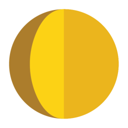
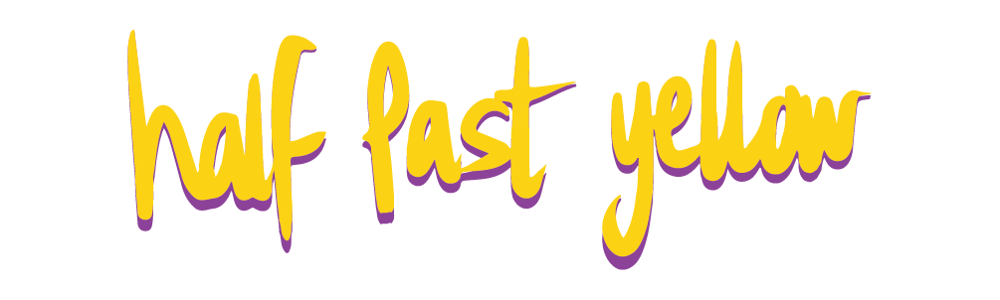

Description
Half Past Yellow is an independent game development studio, based in Copenhagen, Denmark, founded and run by a group of close friends over their shared love of the high-pressure experimental environment of game jams.
With many years of combined experience in the industry, the members of Half Past Yellow have worked extensively with other studios on contemporary titles across several different platforms such as Affordable Space Adventures (WiiU, 2015), Frantics (PS4, 2018), and Mutazione (Cross-Platform, 2019) among others.
History
2024-
Development of Tempest Tower, a Tower Defense game with Platforming elements ♜. Half Past Yellow's first self-published title.
2022-2023
Development of Spectacle 👁️. Due to lack of publisher interest, Half Past Yellow has decided to delay Spectacle indefinitely. A demo of the game was published on Steam in the summer of 2024.
2020-2022
Development of Time on Frog Island 🐸. Half Past Yellow's first physical retail release!
2019-2020
Preproduction and initial development of Komako - eventually cancelled.
2017-2019
Half Past Yellow was quickly joined by Casper Petersen to round off the four-strong founding team. In partnership with Tiny Corp, Half Past Yellow develops and releases their first self-driven commercial project, Tiny Tomb.
2014-2017
The Half Past Yellow team initially started when Gian Dbeis, Max Wrighton, and Remy Stuurwold first met each other during the EUCROMA academic exchange in Copenhagen in 2014. The team bonded over a love of local multiplayer games and spent most of their free time building games together. After completing their respective degrees the group returned to Copenhagen in 2015 to casually work together until eventually founding the company in 2017.
Projects
Videos
2020 Sizzle Reel — YouTube
Logo & Icon
 {kind=link}
{kind=link}
{kind=link}
Awards & Recognition
- "Winner - Best Fun For Everyone" Time on Frog Island, Nordic Game, 2023
- "Winner - Best Kids Game" Time on Frog Island, Spilprisen, 2023
- "Winner - Best Debut" Time on Frog Island, Spilprisen, 2023
- "Finalist - Google's Indie Games Festival" Tiny Tomb, 2020
- "Winner - Best Google Cast Game" Nordic Game Jam, Bash and Block, 2016
Selected Articles
-
I'd happily have played another dozen hours.
Christopher Livingston, PC Gamer, 2022 -
Combines all the excitement of probably breaking your phone and the joys of ragdoll physics
Jess Joho, Kill Screen, 2015
Additional Links
- Steam
- Half Past Yellow at store.steampowered.com.
- Itch.io
- Half Past Yellow at halfpastyellow.itch.io.
Team & Repeating Collaborator
- Max Wrighton
- Co-Founder, Game Director
- Remy Stuurwold
- Co-Founder, CEO, Tech Director
- Casper Petersen
- Co-Founder, Art Director
- Gianfranco Dbeis
- Co-Founder, Senior Artist
Contact
- Inquiries
- info@halfpastyellow.com
- Blog
- halfpastyellow.com/blog/
- Discord
- discord.gg/halfpastyellow
- twitter.com/halfpastyellow
- BlueSky
- bsky.app/profile/halfpastyellow.bsky.social
- Tiktok
- tiktok.com/@halfpastyellow
- instagram.com/halfpastyellow_/
- Threads
- threads.net/@halfpastyellow
- facebook.com/HalfPastYellow/
- YouTube
- youtube.com/@halfpastyellow
- Web
- halfpastyellow.com